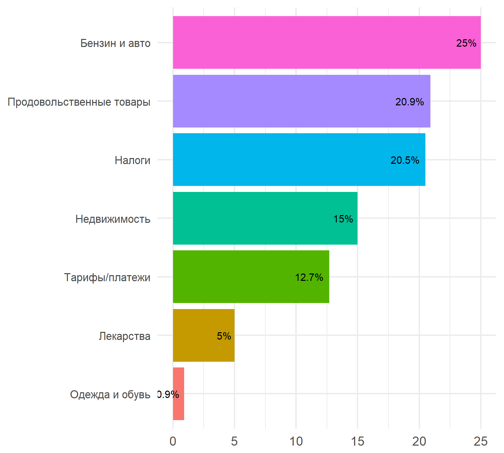

Big Data Indicators: ежемесячные отчеты о динамике индикаторов
2018-02-05
Инфляционные ожидания населения
Январь 2018 г.
Интенсивность инфляционных ожиданий
В январе 2018 г. обеспокоенность населения относительно инфляционной динамики в ближайший год немного возросла, вернувшись на уровень ноября 2017 г. Инфляционные ожидания интернет-пользователей остаются повышенными относительно середины 2017 г. Это соответствует общим ожиданиям повышения инфляции во втором полугодии 2018 г. со стороны Банка России и профессионального аналитического сообщества.
При этом, по последним данным, индикатор медианных ожиданий роста цен, рассчитываемых ФОМ для Банка России на основе опросов населения, также немного возрос – относительно ноября-декабря 2017 г. Это среди прочего отражает и повышение инфляционных ожиданий вовлеченной в интернет аудитории, фиксируемое big data индикатором с 4 кв. 2017 г. Динамика последнего опережает данные опросов примерно на 2 месяца.
При этом ожидания интернет-аудитории относительно роста цен в ближайший год остаются выше ожиданий, измеренных по общей выборке домохозяйств в регионах.

Note:
(1) Для удобства сопоставления индикаторы нормализованы: N(0, 1);
(2) Прочитать подробную информацию о big data индикаторе интенсивности инфляционных ожиданий и исследовать интерактивный график его динамики можно здесь.
Подневное представление индикатора интенсивности указывает на то, что рост беспокойства населения по поводу инфляции был сконцентрирован на периоде новогодних праздников, включая первую рабочую неделю, во время которой значимая часть населения все еще находилась в отпусках. Вероятно, в этот период у россиян было больше возможностей как для анализа ценовой динамики, так и для ее активного обсуждения.
Во второй половине января инфляционные ожидания перешли к снижению до уровней конца 2017 г., наряду с постепенным укреплением курса рубля.

Note: Для удобства сопоставления индикаторы нормализованы: N(0, 1).
Факторы изменения интенсивности инфляционных ожиданий
Анализ факторов изменения интенсивности инфляционных ожиданий указывает на то, что в январе 2018 г. повышенный уровень инфляционных ожиданий население связало с ростом отдельных тарифов с начала года (категория “Внутренняя политика”), а также с динамикой цен на сырье (в основном, упоминая цены на бензин/топливо), и (в меньшей степени) с динамикой собственных доходов. Так, по данным Росстата, в декабре 2017 г. продолжилось устойчивое падение реальных располагаемых доходов населения. Ожидания доклада Минфина США о возможных новых санкциях против России не оказали существенного влияния на инфляционные ожидания россиян в январе. Вблизи даты публикации доклада (29 января 2018 г.) продолжилось снижение интенсивности инфляционных ожиданий.

Note: Прочитать подробную информацию об анализе факторов изменения big data индикатора интенсивности инфляционных ожиданий и исследовать интерактивный график их динамики можно здесь.
Более детальный анализ содержания комментариев января 2018 г. - с акцентом на выявление специфических факторов их изменений (выделение сущностей в текстовых сообщениях) - показывает, что в данный период подавляющее большинство интернет-пользователей связывало ожидания роста цен с ростом цен на бензин, повышением тарифов и цен на продукты питания. Среди продуктов питания упоминались, в основном, цены на хлеб и, в целом, на “продукты”.

Note: приведенные категории упоминаются примерно в 40% всех комментариев за январь 2018 г.
Результаты тематического моделирования
Результаты тематического моделирования комментариев, содержащих ожидания роста цен, в целом, подтверждают выводы о повышенной обеспокоенности интернет-аудитории ценами на топливо и внутренней политической конъюнктурой.
Note: Общие результаты тематического моделирования - за каждый квартал с начала 2017 г. - доступны в разделе “Индикаторы”.
Неопределенность инфляционных ожиданий
В соответствии с данными big data indicators неопределенность инфляционных ожиданий продолжила постепенное снижение, наряду с аналогичным показателем, рассчитываемым ФОМ.

Note: Прочитать подробную информацию об индикаторе неопределенности инфляционных ожиданий и исследовать интерактивный график его динамики можно здесь.
Примеры комментариев: январь 2018 г.
## Цены на продукты выросли, на квартплату и одежду, да вообще на всё цены растут 4 раза в год! А зарплаты остались 7-ми летней давности!!! Денег нет но вы держитесь, за что держатся? Последнюю табуретку догрызаем ??
## Где [вы видите] низкие цены???Поэтому вся страна в долгах что цены низкие а зарплата высокая??
## Осталось снизить зарплаты, повысить подоходный налог и повысить цены на продукты и ЖКХ. Тогда и заживем. Не мы, правда.
## Испытание будет для простого народа,пока не прекратится повышения цен на всё,пока не будут расти зарплаты простых людей работяг и осуществлятся серьёзный и наказуемый контроль за всем этим ,при чём не только в Москве но и во всех регионах и уголках страны
## Вчера зарплаты бюджетникам подняли на 4% в центральной России, а сегодня цены на горючее ростут. Я люблю свою страну и всё что в ней сегодня сделано, но такие моменты меня огорчают к сожалению.
## Повысить для промышленности РФ цену на газ и электричество и банковский процент. Пущай развиваются.
## Очередной кредит взят <...>, что бы было чем погашать предыдущие , вот и временная видимость роста экономики а на деле только спад, цены выросли, зарплаты снизились . Знаю не по наслышке.
## Всё! Причины названы, расходимся и дальше радуемся росту цен.
## Да не просто все. За 3 года все подорожало почти в 2 раза. Зарпалаты сильно не выросли мягко скажем. За эти 3 года типовой покупатель КИа или Шкода не смог бы насобирать на новый подорожавший автомобиль. Скорее всего народ и полез в кредиты. тут и был вопрос в обсуждениях, чего этот человек который до 2014 года ездил на пятере 2105 - не выдержал и в кризис и купил новую лада, которая сейчас по цене Киа в 2014 году. Возможно кредитов не давали....
## Можно понять рост акцизов на нефтепродукты в условиях падения цен на нефть - компенсируется дефицит бюджета. Но при росте цен на нефть повышать ещё и акцизы на нефтепродукты, а потом бороться с инфляцией заоблачной ставкой рефинансирования? Мда...
## Не точно: Основную нагрузку примут на себя клиенты сотовых операторов, т.е. люди, сначала прямую - когда сами платят, потом косвенную, когда за счет повышения расходов на связь пойдет цепная реакция повышения цен на все остальное - не резко и не сразу - но до упора ....
## да я понимаю что не приятно это - но инфляция неизбежна. следуя общей логике - бензин должен в год дорожать на 5-7 рублей. +эти вымышленные санкции, которые повышают стоимость всего. почти все оборудование нефтедобычи - импорт. и оно тоже не дешевеет. \n\nне задумывался почему при всех эти нюансах , бензин рос по копейкам в цене, а не сразу до 50 рублей? доллар вырос до 70 с чем то в 14 году, а бензин почему то нет. видим аналогию?:)\n\nдобрый вечер кстати :)
## Водители в очередной раз готовятся к повышению цен
## Ждем роста цен.
## К росту цен при низкой инфляции.
## Чем чем, ростом цен. Для покупателей ни одно движение на рынке не оборачивается чем то другим.
## Не верю я <...> .Коль цены растут, не по дням ,а по часам .
## Всё как всегда : инфляция , повышение цен на всё
## ежели у нас зерна выше крыши, то [почему] цена на хлеб в магазинах растёт как на дрожжах?Декабрь 2017 г. - начало января 2018 г.
Интенсивность инфляционных ожиданий
В декабре 2017 г. обеспокоенность населения относительно инфляционной динамики в ближайший год немного снизилась относительно ноября. Однако, в целом, инфляционные ожидания интернет-пользователей остались повышенными относительно середины 2017 г. Это согласуется с общими ожиданиями повышения инфляции уже во втором полугодии 2018 г. со стороны профессионального аналитического сообщества (Bloomberg, ВТБ Капитал и др.) и самого Банка России.
При этом big data индикатор интенсивности ожиданий роста цен продолжает значимо и устойчиво превышать показатель медианных ожиданий роста цен, рассчитываемых ФОМ для Банка России на основе опросов населения. Ожидания роста цен в ближайший год со стороны интернет-аудитории на протяжении 4 кв. 2017 г. значимо выше ожиданий, измеренных по общей выборке домохозяйств в регионах.
Справочно: По данным Росстата, в декабре 2017 г. сохранились рекордно низкие показатели инфляции в терминах г/г (2.5% к декабрю 2016 г.) при появлении признаков ускорения относительно ноября (+0.4% к ноябрю 2017 г.).

Note:
(1) Для удобства сопоставления индикаторы нормализованы: N(0, 1);
(2) Прочитать подробную информацию о big data индикаторе интенсивности инфляционных ожиданий и исследовать интерактивный график его динамики можно здесь.
Подневное представление индикатора интенсивности и его сопоставление с ключевыми макроэкономическими трендами позволяет сделать вывод о том, что рост беспокойства населения по поводу инфляции, в целом, в декабре-начале января был в большей степени сонаправлен с наблюдаемым ростом цен на нефть, несмотря на относительно стабильную динамику курса рубля. Как показывает анализ факторов изменения ожиданий, интернет-аудитория в декабре-начале января, в основном, оказалась обеспокоена ростом цен на топливо.

Note: Для удобства сопоставления индикаторы нормализованы: N(0, 1).
Факторы изменения интенсивности инфляционных ожиданий
Декабрь 2017 г. - начало января 2018 г.
Анализ факторов изменения интенсивности инфляционных ожиданий указывает на то, что в декабре и начале января 2018 г. повышенный уровень инфляционных ожиданий население связало с ростом цен на сырье (в основном, упоминая цены на бензин/топливо) и неблагоприятной внешней экономической и политической конъюнктурой (упоминания возможности появления новых санкций, политической обстановки, способствующей росту цен на нефть, планов ужесточения ДКП со стороны ФРС и др.).

Note: Прочитать подробную информацию об анализе факторов изменения big data индикатора интенсивности инфляционных ожиданий и исследовать интерактивный график их динамики можно здесь.
Более детальный анализ содержания комментариев - с акцентом на выявление специфических факторов роста ожиданий в декабре-начале января - показывает, что в данный период подавляющее большинство интернет-пользователей связывало ожидания роста цен с ростом цен на бензин. В значимо меньшем масштабе упоминались отдельные продукты питания и рост налоговой нагрузки.

Note: приведенные категории упоминаются примерно в 40% всех комментариев за декабрь 2017 г. и начало января 2018 г.
Результаты тематического моделирования
Результаты тематического моделирования комментариев, содержащих ожидания роста цен, в целом, подтверждают выводы о повышенной обеспокоенности интернет-аудитории ценами на топливо и неблагоприятной внешней экономической и политической конъюнктурой. При этом в целом за 2 полугодие 2017 г. ключевым фактором роста инфляционных ожиданий населения оставалась стагнация доходов и кризисная ситуация в экономике.
Все эти факторы люди указывают в тех же сообщениях, в которых говорят об ожиданиях роста цен.
Most important topics
За период с 1 декабря 2017 по 8 января 2018

Separate important topics
Отдельные важные темы за каждое полугодие 2014-2017 гг.

Note: каждый столбец диаграммы показывает наиболее значимые темы, встречающиеся в комментариях, содержащих ожидания роста цен, в одном из кварталов 2017 г. Все слова в темах приведены к основе (stemming).
Неопределенность инфляционных ожиданий
В соответствии с данными big data indicators неопределенность инфляционных ожиданий продолжила свое снижение, наряду с аналогичным показателем, рассчитываемым ФОМ.

Note: Прочитать подробную информацию об индикаторе неопределенности инфляционных ожиданий и исследовать интерактивный график его динамики можно здесь.
Примеры комментариев: декабрь 2017 г. - начало января 2018 г.
## Логично. Цена за баррель растёт и я не помню такого случая,чтобы цена на бензин снижалась.
## Цена на бенз - рост цен - рост реальной инфляции - кругом враги
## Когда цены на бензин опустите. Нефть далеко за 30. А вы цены все выше и выше
## А цены в магазинах и на топливо как росли, так и растут))
## Нефть дорожает - цены растут - а что вы хотели? \nНефть дешевеет - цены растут - надо убытки компенсировать
## Судя по ценникам на закупку и на полке моего магазина цены на электронику упали как минимум на 10% а вот еда и бензин постоянно растут
## Сейчас на складах заканчиваются товары купленные по старым ценам. Сейчас включат в цену продукции Платон, налоги, повышение цен на бензин, стоимость амортизации грузовых автомобилей по новым ставкам в рублях (запчасти все импортные и стоят в баксах). Вот тогда не удивляйтесь цене на мясо в 1200-1300 рублей за 1 Кг. У нас производство обеспечивает рынок мясом всего на 6-7%, остальное импорт, который тоже стоит в баксах. Проще говоря, после нового года все подорожает на 70-90%. Не нравится цена? Жрите Землю. Когда дальнобойщики бастовали-их не воспринимали в серьез, поэтому все налоги и курс падения рубля включили в стоимость доставки в рублях. Например, задняя ступица для грузовика как стоила 900 баксов так и стоит, а вот в рублях это подорожало. Так же ввели Платон, бензин подорожает до 60 рублей. Так что готовьтесь, скоро веселее будет.
## Стабильность во всём - в росте цен на бензин, как впрочем, и на всё остальное...
## Может я не в той России живу, но кроме повышения цен я ничего не заметил
## В магазин хожу через день, каждый раз цены меняются... Естественно, растут...
## Чепуха какая-то. Вот ложь же, я же вижу цены. Цены растут, а доходы нет.
## зарплаты точно не росли, они остались на уровне 2010 года, а вот цены ,как росли так и растут на все
## Растёт срос, растут цены, свободный рынок, что поделать. Не нравятся цены, нужно отмечать НГ по китайскому календарю.
## в России только цены стабильно растут
## Цены растут как на дрожжах и практически на всё, а инфляции в как будто бы нету)))
## какие то цифры сказочные у них последние года... 2.5.... цены растут раз в пять больше
## Опять приведу пример с чечевицей, купленной в ашане в Екб. Продукт произведён в России, производитель один и тот же. Фото с моего телефона. Просто сравнить цены И! вуаля! Конечная потребительская инфляция за 18мес 55% !!!! Т.е. около 36% В ГОД!!!Ноябрь 2017 г.
Интенсивность инфляционных ожиданий
В ноябре отмечается новый виток повышения обеспокоенности населения относительно инфляционной динамики - по-прежнему на фоне рекордного снижения инфляционного давления за всю историю наблюдений. Согласно официальным данным Росстата, в октябре общий индекс потребительских цен достиг 2.7%. Однако мы продолжаем фиксировать нарастающее беспокойство населения относительно расхождения официальных данных и уровня воспринимаемой и ожидаемой инфляции.
Кроме того, несмотря на сохранение сходной динамики с медианными ожиданиями роста цен, рассчитываемых ФОМ для Банка России на основе опросов населения, big data индикатор интенсивности ожиданий роста цен значимо и устойчиво превышает показатель ФОМ с мая 2017 г. Реакция интернет-аудитории на замедление снижения инфляции оказалась сильнее и пока не показывает признаков возможного снижения.

Note: Прочитать подробную информацию о big data индикаторе интенсивности инфляционных ожиданий и исследовать интерактивный график его динамики можно здесь.
Подневное представление индикатора интенсивности и его сопоставление с ключевыми макроэкономическими трендами позволяет сделать вывод о том, что рост беспокойства населения по поводу инфляции, в целом, в ноябре был в большей степени сонаправлен с наблюдаемым обесценением курса рубля к доллару, несмотря на повышение цен на нефть. Интернет-аудитория, читающая и комментирующая экономические новости, в 2017 г. оказывается более чувствительной к колебаниям валютного курса, чем к динамике цен на нефть.
Факторы изменения интенсивности инфляционных ожиданий
Ноябрь 2017 г.
Анализ факторов изменения интенсивности инфляционных ожиданий указывает на то, что ноябрьский эпизод повышения обеспокоенности возможным ростом цен или свое недоверие к официальной статистике, указывающей на снижение инфляции, население связывает с динамикой собственных доходов (отсутствие роста пенсий и заработной платы, нехватка доходов на покупку нужных товаров) и неблагоприятной внутренней экономической конъюнктурой (кризис, стагнация, высокая кредитная нагрузка, рост расходов).
При этом, несмотря на следование ожиданий траектории ослабления рубля, в комментариях, содержащих ожидания роста цен, чаще упоминаются цены на нефть. Вероятно, повышение беспокойства относительно будущей динамики цен вызывает неуверенность в устойчивости наблюдаемого тренда к росту цен на сырье.

Результаты тематического моделирования
Результаты тематического моделирования комментариев, содержащих ожидания роста цен, в целом, подтверждают выводы о повышенной обеспокоенности интернет-аудитории уровнем собственных доходов и кризисной ситуацией в экономике. Эти факторы люди указывают в тех же сообщениях, в которых говорят об ожиданиях роста цен.
Most important topics
Note: каждый столбец диаграммы показывает наиболее значимые темы, встречающиеся в комментариях, содержащих ожидания роста цен, в одном из кварталов 2017 г. Все слова в темах приведены к основе (stemming).
All topics
Дополнительно: июль - ноябрь 2017 г.
Более детальный анализ содержания комментариев в период появления значимого расхождения официальной статистики по инфляции и инфляционных ожиданий - с июля 2017 г., времени, когда инфляция возобновила тренд к снижению, по ноябрь 2017 г. позволяет выявить ряд факторов, с которыми интернет-аудитория связывает свое недоверие данным официальной статистики. Наибольшее значение здесь имеют:
- цены на бензин и автомобильные аксессуары;
- отдельные категории продовольственных товаров, в основном, хлеб, молочная продукция, яблоки, томаты и икра (и др.);
- рост налоговой нагрузки, а также различных тарифов и платежей;
- динамика цен на недвижимость.

Note 1: все приведенные категории упоминаются примерно в 63% всех комментариев за период с июля по ноябрь 2017 г.
Note 2: Прочитать подробную информацию о факторах изменения интенсивности инфляционных ожиданий и исследовать интерактивный график их динамики можно здесь.
Неопределенность инфляционных ожиданий
В соответствии с данными big data indicators неопределенность инфляционных ожиданий продолжила свое снижение, наряду с аналогичным показателем, рассчитываемым ФОМ.
Note: Прочитать подробную информацию об индикаторе неопределенности инфляционных ожиданий и исследовать интерактивный график его динамики можно здесь.